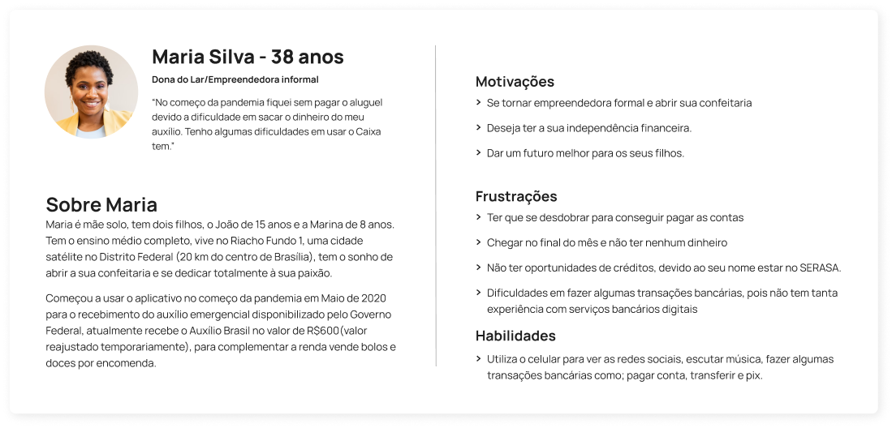
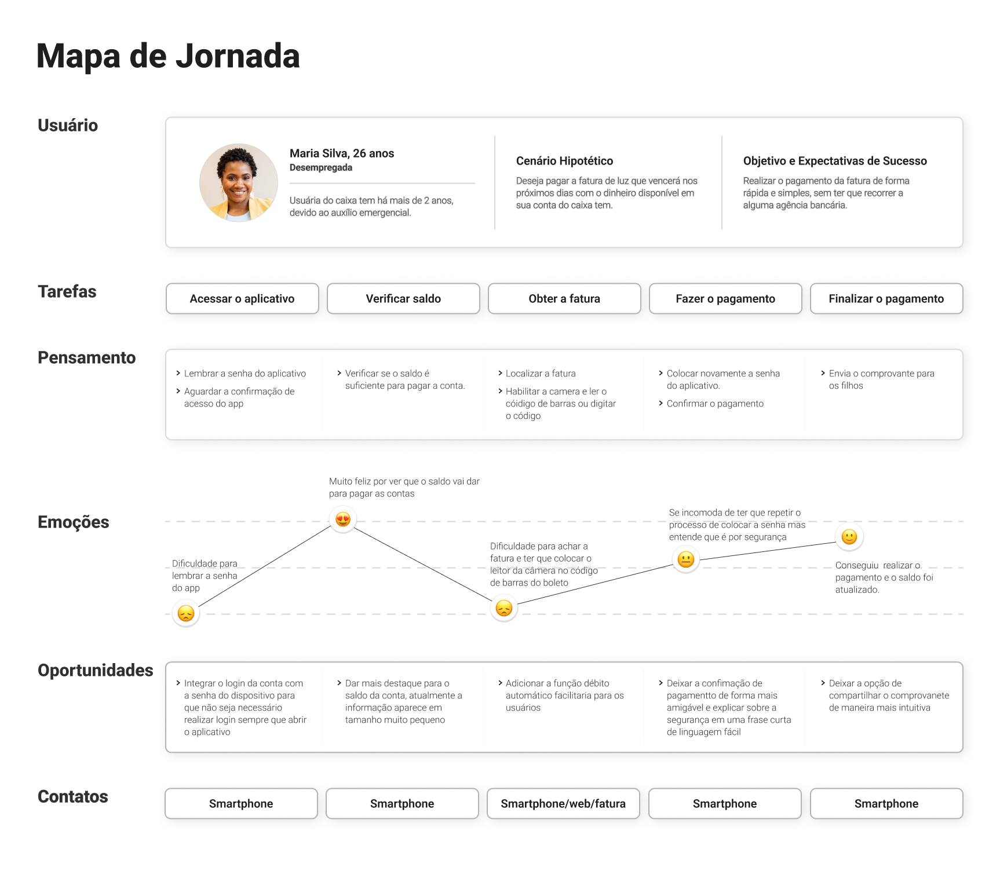
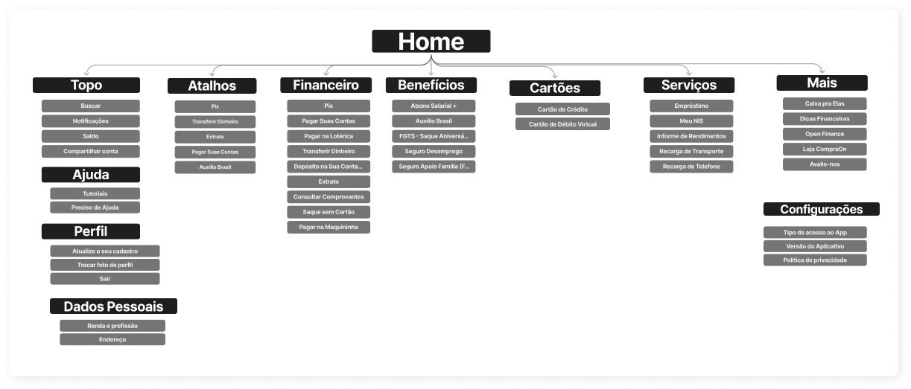
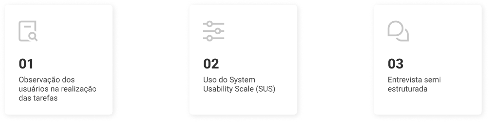
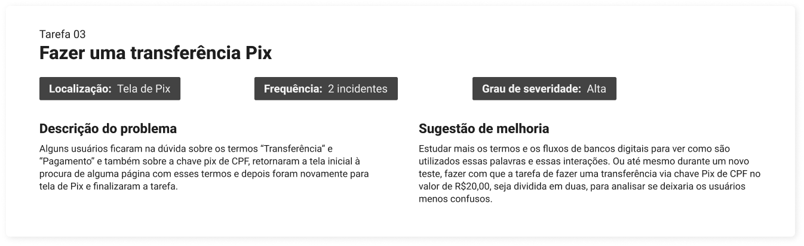
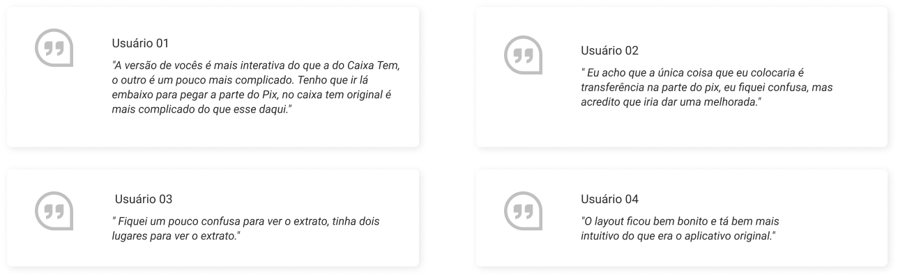

Por que o redesign?
No projeto do curso de Design UX/UI da Plataforma Coderhouse foi pedido o redesign de uma aplicação, foi escolhido o aplicativo Caixa Tem, pois foi muito utilizado na pandemia de 2020 para o auxílio emergencial e até hoje por meio do bolsa-família e assim ter um público bem abrangente de diversas partes do país.
Principais etapas do redesign
Nesse projeto vai seguido a abordagem do Double Diamond e em que cada etapa foi usado os métodos informados na imagem abaixo:

1. Pesquisa
1.1 Metodologia
Realizado uma pesquisa via Google Forms, na qual foram obtidas 23 respostas.
1.2 Hipótese
Analisar se as inúmeras funcionalidades que existem no aplicativos podem fazer com que os usuários sintam-se confusos sobre o funcionamento geral do aplicativo.
Dificuldades
- Interface pouco intuitiva
- Dificuldade de acesso
- Burocrático
- Ter que resolver problemas na agência
Sugestões de melhorias
- Interface mais limpa intuitiva
- Não precisar ir na agência
- Organização das informações de maneira mais fácil
2.Persona
A partir das pesquisas, foi criada uma persona, que nos ajudou a indentificar melhor necessidades do usuário descrita abaixo:
3.Mapa de jornada
Também foi criado um mapa de jornada para identificar como seria realizada as principais atividades do aplicativo e quais seriam as principais dificuldades.
4.Arquitetura de informação
Após análise das funcionalidades que o aplicativo já tinha e com os insights da pesquisa foi definido a arquitetura de informação que o redesign do app iria ter.
5.Protótipo
6.Teste de usabilidade
O teste de usabilidade seguiu as seguintes etapas descritas nas imagem abaixo:
Abaixo segue como foram realizadas essas etapas e seus resultados
6.1 Resultado do teste
A média do SUS (método de avaliação de usabilidade com 10 perguntas em escala de 1 a 5) foi 96,87, indicando um índice excelente e a máxima eficácia no novo design do aplicativo Caixa Tem.
6.2 Problemas e melhorias
Na imagem abaixo segue a tarefa que teve uma maior dificuldade de execução
6.3 Citações dos usuários
Na imagem abaixo segue algumas das principais citações dos usuários
Conclusão
Baseado nos resultados dos testes, confirmamos que o redesign do aplicativo foi positivo. Destacamos que os usuários sentiram facilidade ao completar as tarefas e que recomendariam o uso do aplicativo. Por fim, todos os usuários completaram as tarefas em tempo e forma.